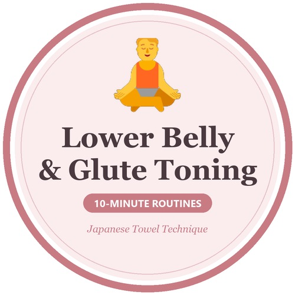

Your bonus

Lower Belly & Glute Toning
3 short 10-minute routines that pair with your plan
Before you start — please read. Talk to your doctor first if you are pregnant, gave birth in the last 12 weeks (or had a C-section), had recent abdominal or back surgery, have a hernia, osteoporosis, a diagnosed spine or disc condition, or any condition that makes lying on your back uncomfortable. A gentle stretch is normal. Stop right away if you feel sharp pain, numbness, tingling or dizziness.
How each routine works
- 1 minute warm-up: march in place, arm circles, 5 cat–cows.
- 4 moves × 40 seconds, 20 seconds rest between moves.
- 2 rounds = 8 minutes.
- 1 minute cool-down: knee hug and child's pose.
Week 1: work 30 s / rest 30 s. Week 2: 40/20. Week 3: add a 3rd round if you feel good.
The 3 routines
Routine A
Lower Belly
- Reverse tilt-ups · On your back, knees bent and lifted. Gently curl your hips a little off the floor using your lower belly, lower slowly.
- Toe taps · Knees at 90° in the air. Lower one foot to tap the floor, return, switch. Lower back stays down.
- Bent-knee leg lowers · Both knees bent in the air. Lower both feet toward the floor as far as you can with your back flat, return.
- Forearm plank (knees down) · Forearms and knees on the floor, body in a straight line from head to knees. Breathe.
Routine B
Glutes
- Glute bridge · On your back, feet flat. Squeeze your glutes and lift your hips, lower slowly.
- Side-lying leg lifts · Lie on your side, bottom knee bent. Lift the top leg straight up and down. Switch sides each round.
- Donkey kicks · On hands and knees, keep the knee bent and press one heel up toward the ceiling. Switch sides each round.
- Squat to chair · Stand in front of a chair, sit back until you lightly touch it, stand up squeezing your glutes.
Routine C
Combo
- Towel squeeze bridge · Rolled towel between your knees. Squeeze and lift your hips.
- Dead bug · Arms up, knees at 90°. Lower opposite arm and leg slowly, alternate.
- Clamshells · On your side, knees bent, feet together. Open the top knee like a clam, close. Switch sides each round.
- Bird dog · On hands and knees, reach one arm forward and the opposite leg back, return, alternate.
Your weekly schedule
| Day | Routine |
|---|---|
| Mon | Routine A · Lower Belly |
| Tue | Routine B · Glutes |
| Wed | Rest or 20-minute walk |
| Thu | Routine C · Combo |
| Fri | Routine A · Lower Belly |
| Sat | Routine B · Glutes |
| Sun | Rest |
Do it right after your towel session or at another time of day — both work.